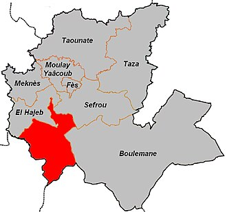
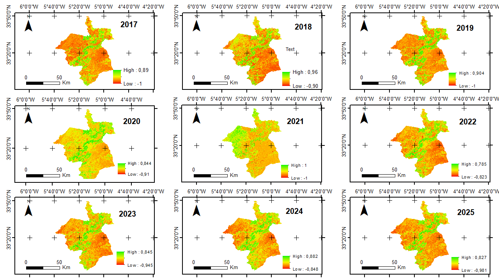
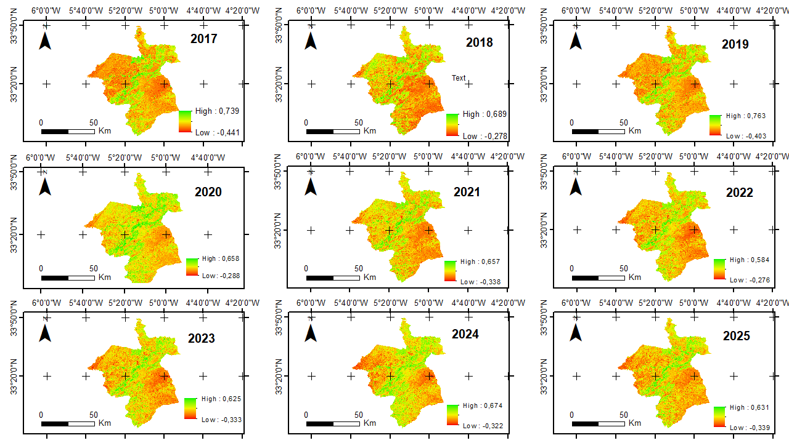
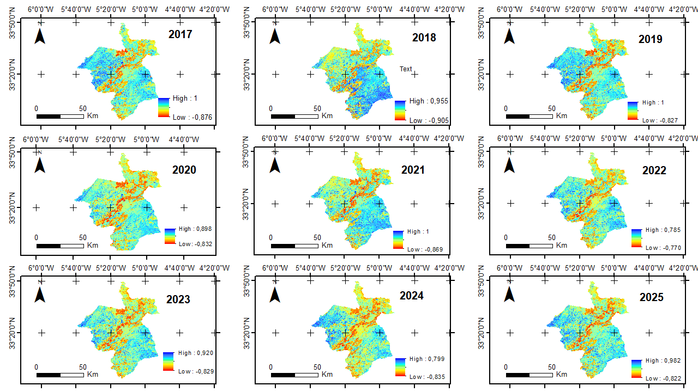
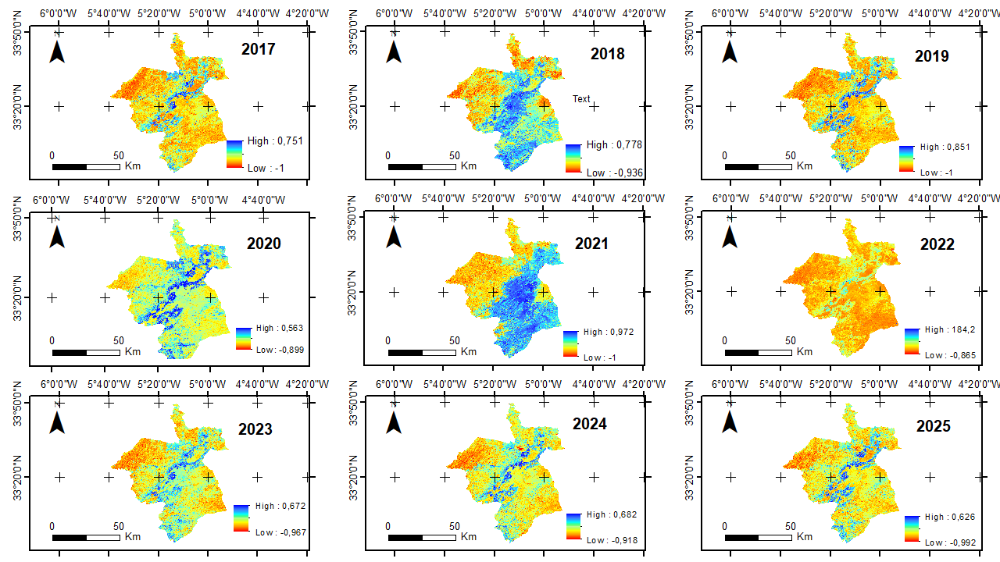
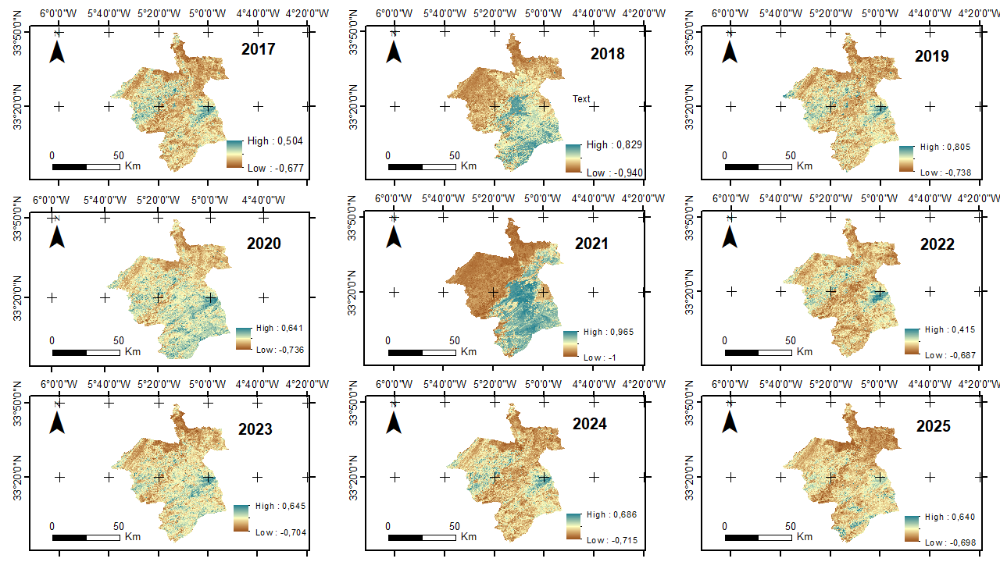
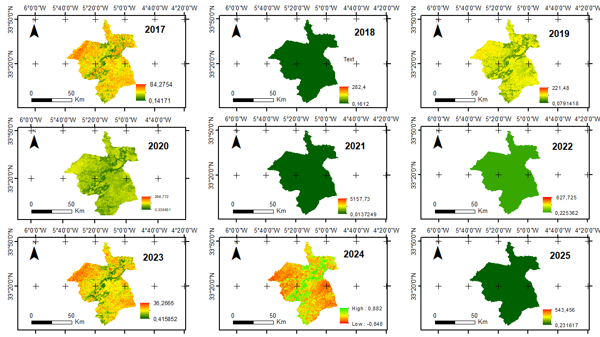

Développé par l'Ambassade de l'Eau et le Cerema, STRATEAU est un outil numérique d'aide à la gestion prospective et intégrée de la ressource en eau :
Pluie, $ET_0$, MNT (altitude, pentes), pédologie et indices satellitaires Sentinel-2.
Barrages, sous-bassins versants, réseau hydrographique (oueds), nappes et sources.
Canevas par commune et par mois : Agriculture (FAO-56), Cheptel, AEPI, Industrie, Tourisme.



La carte géologique d'Ifrane (Fig 3.1) met en évidence la prédominance des formations carbonatées liasiques (calcaires et dolomies du Causse moyen-atlasique) et des coulées basaltiques quaternaires, favorisant l'infiltration et la recharge des nappes.


.png)


| Paramètre (0–5 cm) | Plage de valeurs | Répartition spatiale & Comportement hydrique |
|---|---|---|
| 1. Limon | 0 à 463 g/kg | Fort à l'ouest et nord-ouest (sensible à la battance et à l'érosion), faible au sud. |
| 2. Sable | 0 à 509 g/kg | Inverse du limon : domine au centre, est et sud (sols légers et très drainants). |
| 3. Argile | 0 à 336 g/kg | Concentrée à l'ouest et au centre : forte rétention d'eau (réserve utile) mais faible perméabilité. |
| 4. pH du sol | 65 à 79 (pH 6,5 à 7,9) | Valeurs $\text{pH}\times 10$ (dominante 7,5 à 7,7) : sol neutre à légèrement basique typique des roches calcaires. |
| 5. Matière Organique | 0 à 1 095 | Bandes très riches (bleu foncé) le long de l'axe central NE–SO correspondant aux forêts de cèdres/chênes et fonds humides. |
C_Feuil2_Parametres de STRATEAU.


Forte capacité de rétention hydrique (RFU élevée), mais faible perméabilité favorisant la battance et le ruissellement.
Sols plus légers et filtrants (jusqu'à 509 g/kg de sable), favorisant l'infiltration rapide vers les calcaires karstiques.
Teneur maximale (1 095) sous les cédraies et chênaies d'altitude, stabilisant la structure du sol et l'humidité.












| Site de Barrage | Capacité ($Mm^3$) | Apports moyens annuels ($Mm^3$) |
|---|---|---|
| Aït Moulay Ahmed | 3,00 Mm³ | 25,50 Mm³/an |
| Bousraf | 1,92 Mm³ | 28,40 Mm³/an |
| Michelifen (Tlat Jamaa) | 1,50 Mm³ | 7,30 Mm³/an |
| Ahellal | 1,50 Mm³ | 1,30 Mm³/an |
| Tizguit amont | 0,30 Mm³ | 11,60 Mm³/an |
| Tizguit aval | 0,12 Mm³ | 40,00 Mm³/an |
| Sous-Bassin Versant | Apports annuels moyens ($Mm^3/\text{an}$) |
|---|---|
| 1. Ouljet Soltane | 182 Mm³/an |
| 2. Adarouch | 86 Mm³/an |
| 3. Tizguit au niveau de Sidi Echahmed | 47 Mm³/an |